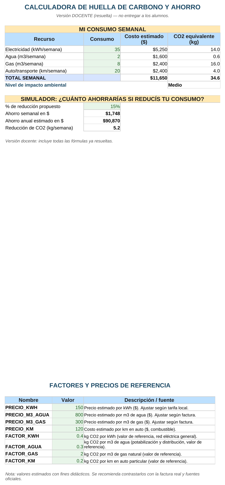

Informática Aplicada a la Gestión · Prof. Humberto Montaldi
Vas a cargar tu consumo semanal de electricidad, agua, gas y transporte para estimar el costo y el impacto ambiental, clasificar tu nivel de impacto y simular cuánto ahorrarías si reducís tu consumo.
Archivo a usar: 3_Calculadora_Huella_Carbono_ALUMNOS.xlsx
⬇ Descargar planilla (Alumnos)La hoja "Factores" tiene precios y factores guardados con un nombre (por ejemplo PRECIO_KWH). Podés usar ese nombre directamente en la fórmula, en vez de escribir la celda.
Sintaxis =consumo*NOMBRE_DEL_FACTOR Ejemplo en este archivo (costo de electricidad) =B6*PRECIO_KWH Ejemplo en este archivo (CO2 de electricidad) =B6*FACTOR_KWHSI evalúa una condición: si se cumple, devuelve un resultado; si no, devuelve otro. "Anidar" significa poner un SI adentro de otro SI, para poder evaluar más de dos posibilidades en cadena.
Sintaxis =SI(condición1,"resultado1",SI(condición2,"resultado2","resultado3")) Ejemplo en este archivo (Bajo < 20, Medio hasta 40, Alto más de 40) =SI(D10<20,"Bajo",SI(D10<=40,"Medio","Alto"))Se lee así: "si el total de CO2 es menor a 20, poné Bajo; si no, fijate si es menor o igual a 40 (Medio); si no cumple ninguna de las dos, es Alto".
Así debería quedar tu planilla resuelta (con los datos de ejemplo). Usalo para comparar tu resultado — acá no se ven las fórmulas, solo los valores.

3_Calculadora_Huella_Carbono_MODELO.png